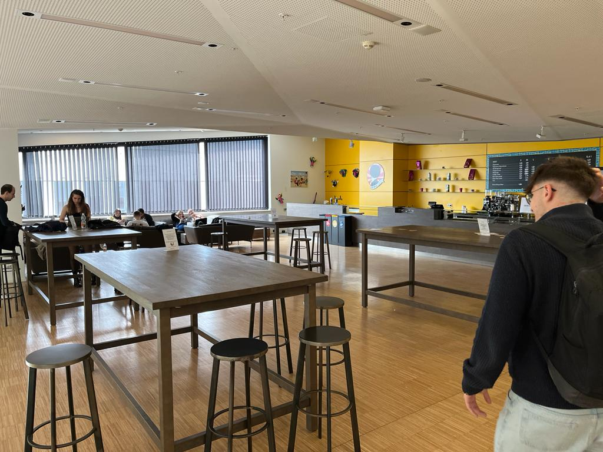

Hier findest du ein paar Fakten bezüglich wieso die WU, also die Wirtschaftsuniversität Wien, auch ein Ort für Schüler und nicht nur für Studenten ist. Natürlich kann man als Nicht-Student nich überall rein, jedoch bietet der Campus der WU auch genug Orte wo man einfach reingehen kann, sich setzen kann und so wie alle dort in Ruhe arbeiten und/oder lernen kann. (Zum Vergrößern die Bilder anklicken und nach unten Scrollen)
Mit einer sehr modernen Bauweise heisst uns die WU wilkommen und alles wirkt sympathisch. Außerdem ist der Campus wie eine kleine selbstständige Stadt aufgebaut, denn man findet hier fast alles was man braucht!

Das ist höchswahrscheinlich das Gebäude was uns Schüler am meisten interessieren wird, denn hier kann man einfach reinspazieren und anfangen zu Büffeln!

Gleich nach dem Betreten sehen wir wie offen dieser große Raum gestalltet wurde, und wie lebendig es im Inneren ist.
Wir finden mit leichtigkeit einen Tisch, sogar für mehrere Personen, setzten uns und tun das, wofür wir hier sind. Wir lernen. Reden ist erlaubt, aber angenehm leise ist es trotzdem. Man kann sich also auch Mathe von seinen Freunden erklären lassen.